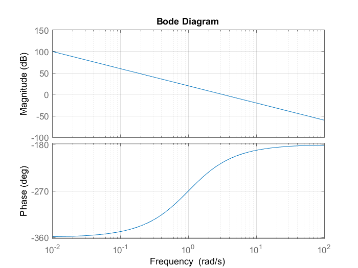
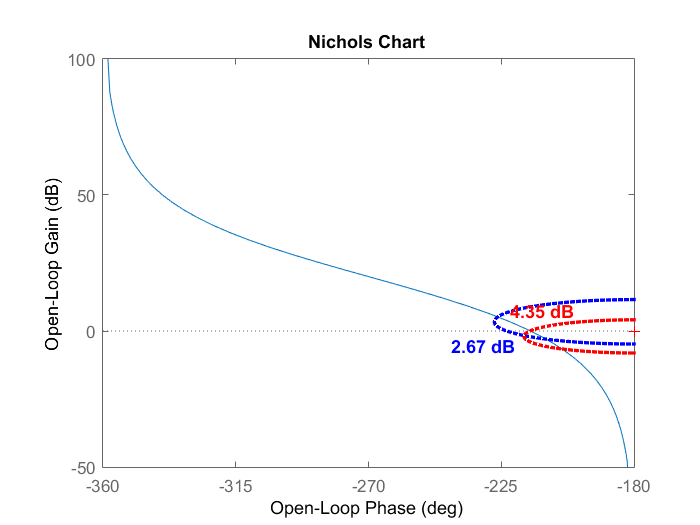
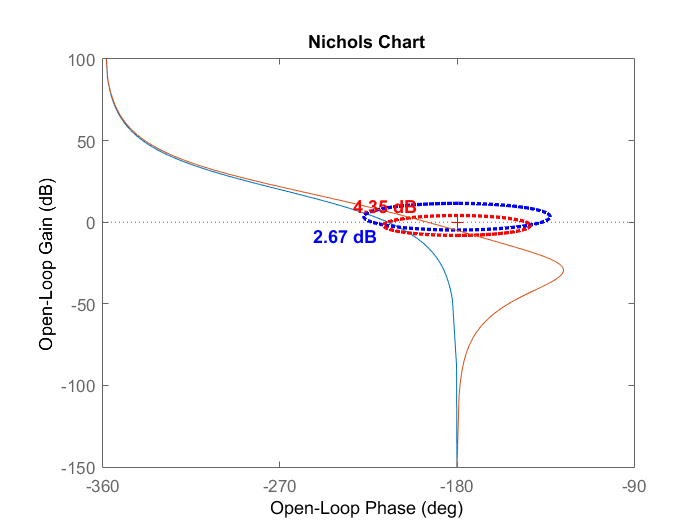
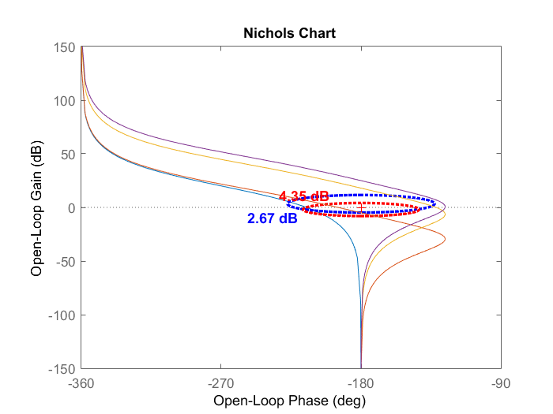
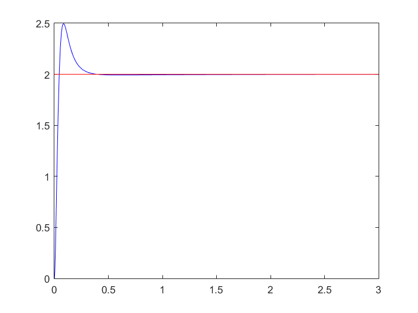
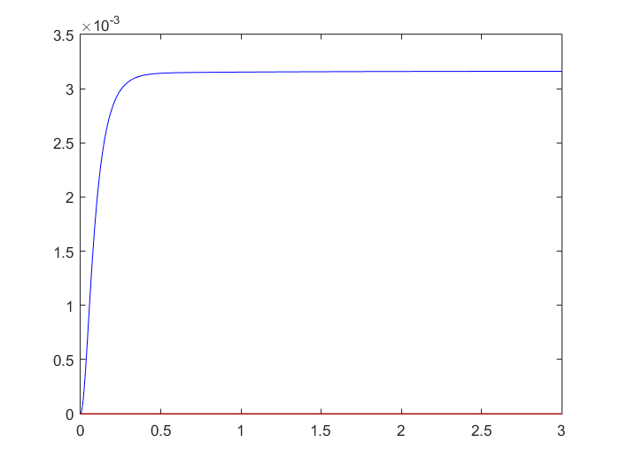

Lead network design example 2
AC 16 p. 17
Contents
Initialization
clear all, close all, clc; s = tf ( 's' ); G = (s+1) / ( s^2 * (s-1) );
Requirements:
steady state: e_r = 0 with step input, y_d <= 0.1 with step output disturbance transient: s_hat <= 25%, t_r <= 0.7 s
Steady state analysis
I first try the negative value of K_c K_c = -10; % C_ss = K_c; L1 = C_ss * G;
figure ('name', 'Nyquist graph: case with negative K_c'); nyquist (L1) ;
figure ('name', 'Bode plot: case with negative K_c'); bode (L1) ;
% The negative K_c gives me an unstable system, therefore I use K_c % positive K_c = 10; C_ss = K_c; C = C_ss; % update of the controller function L1 = C * G; % update of the loop function % figure ('name', 'Nyquist graph: case with positive K_c'); % nyquist (L1) figure ('name', 'Bode plot: case with positive K_c'); % Use the bode plot % to build nyq. bode (L1); grid on;
Result of transient analysis
Transient analysis was done using the graphs
figure ('name', 'Nichols plot of L1'); nichols (L1), hold on t_grid(2.67); s_grid(4.35);
Lead network
Start by taking a value of m_D able to introduce the phase lead I need, which is delta_Phi = -132 - (-186) = 54°
m_D = 12 % this is my choice, I could have chosen different values and % it would have worked w_D = 18/2.1 % from the graph I find the value of w_norm and from % that I have w_D = w_des/w_norm C_D = ( 1 + s/w_D ) / (1 + s / (m_D*w_D) ); % lead network L2 = C_D * L1; % update of loop function C = C_D * C_ss % update of the controller function nichols (L2) % show the result
m_D =
12
w_D =
8.5714
C =
1029 s + 8816
---------------
8.571 s + 881.6
Continuous-time transfer function.
 Gain adjustment
I need to adjust the gain by increasing it so that w_des lies on the 0 dB line.
k = 10 ^ (23/20); % Computation of the gain adjustment L3 = k * L2; nichols(L3) % This isn't enough to bring the loop function outside the locus, so I need % to increase the value of k. From the graph I can tell that I need about 5 dB more. k = 10 ^ (30/20); L3 = k * L2; % Updating loop function C = C * k; % Updating controller function nichols(L3)
Simulation of the behavior of the output
simulation initialization
t_stop = 3; A_r = 0; A_dA = 0; A_dT = 0; A_dY = 0; % start simulation of step input A_r = 2; sim ('control_structure_a'); % use this control structure with the % amplitude of the steps defined above figure ('name', 'Simulation of step input'); plot (y.time, y.signals.values, 'b'); % plot the output values hold on; plot (r.time, r.signals.values, 'r'); % plot the reference signal % start simulation of d_A A_r = 0; A_dA = 1; sim ('control_structure_a'); % use this control structure with the % amplitude of the steps defined above figure ('name', 'Simulation of error'); plot (y.time, y.signals.values, 'b'); % plot the output values hold on; plot (r.time, r.signals.values, 'r'); % plot the reference signal 